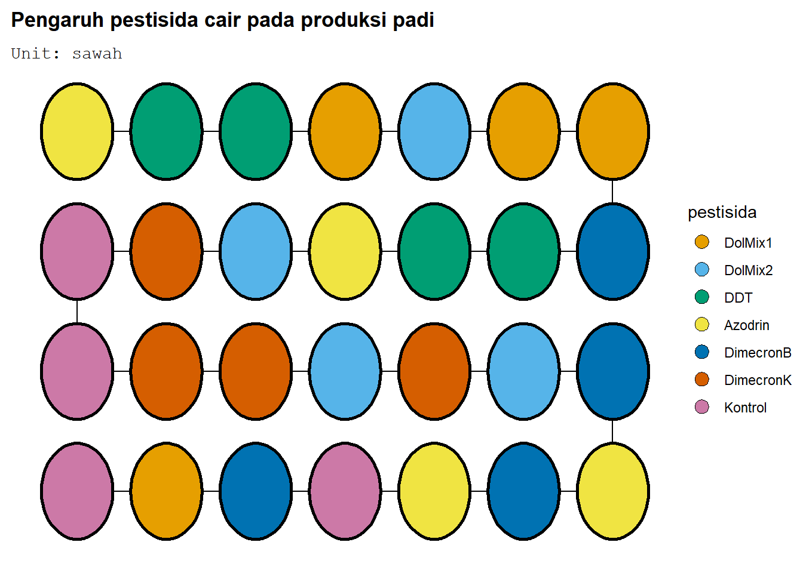
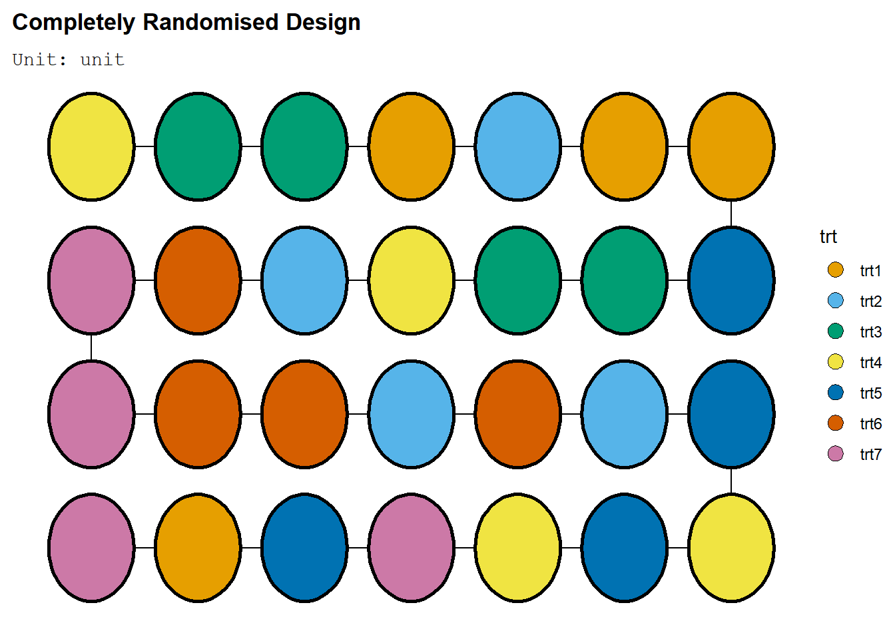
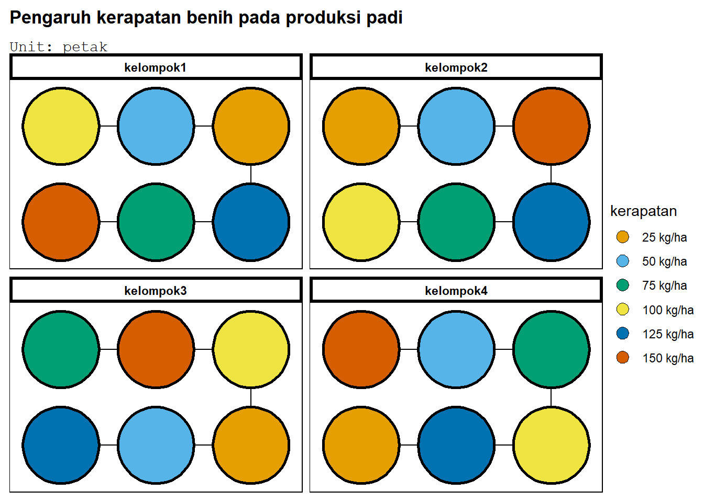
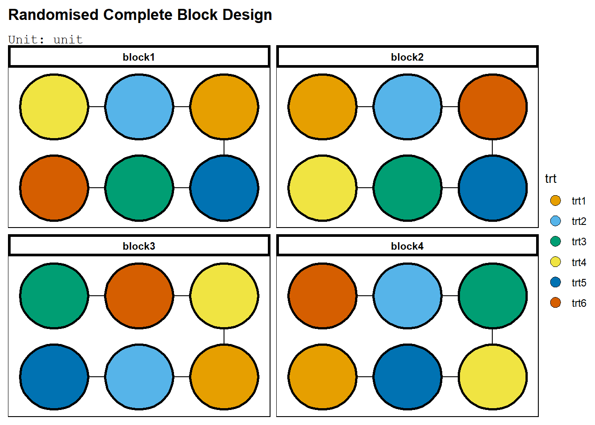
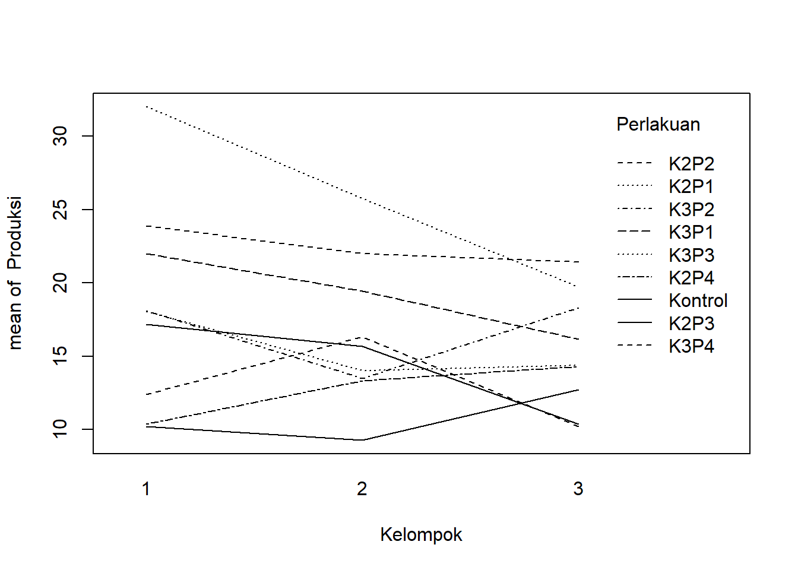
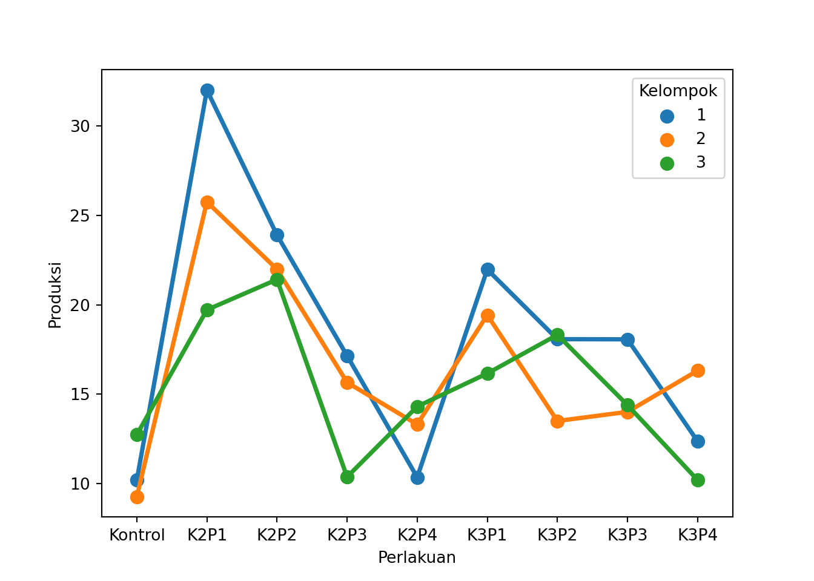
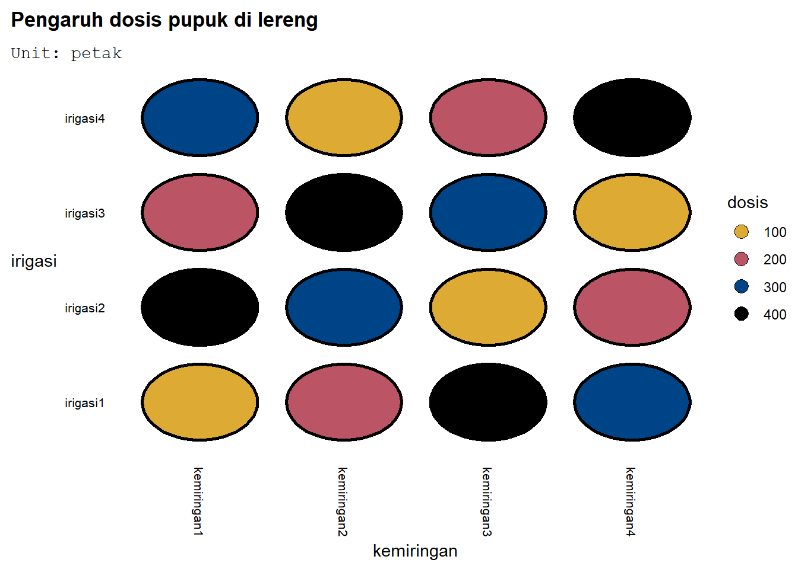
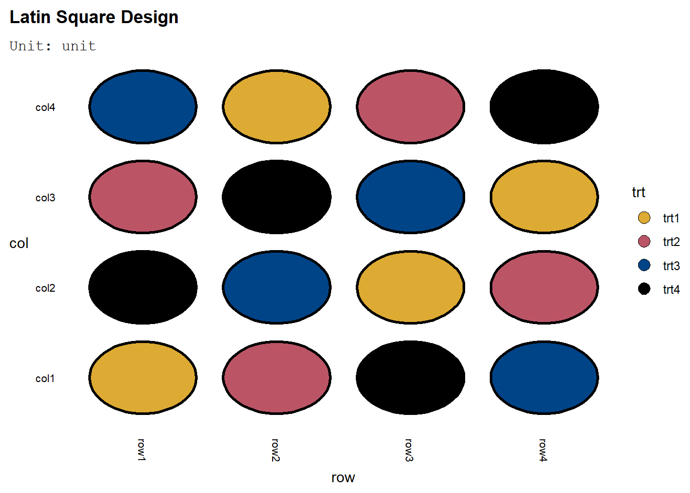

Code
library(agricolae)
#cek fungsi design.
str(design.crd)function (trt, r, serie = 2, seed = 0, kinds = "Super-Duper", randomization = TRUE) Bab ini akan membahas percobaan faktor tunggal dalam RAL, RAK, dan RBSL. Oleh karena itu, keragaman yang disebabkan perlakuan merupakan level-level dari satu faktor tertentu saja. Kita akan memulai dengan menjelaskan rancangan-rancangan pengendalian lingkungan secara garis besar. Inti dari bab ini adalah penjelasan dan implementasi tiap rancangan. Di akhir bab, akan ada pengayaan berupa rancangan Greko-Latin dan Balanced Incomplete Block Designs.
Dalam meneliti efek suatu peubah pada peubah lainnya, sering muncul sumber keragaman lain - kita dapat sebut hal ini sebagai faktor penganggu. Ada beberapa faktor penganggu yang kita tidak dapat observasi dan tidak dapat kendalikan. Dampak faktor-faktor tersebut diatasi oleh pengacakan. Ada beberapa faktor penganggu yang dapat diobservasi, tapi tidak dapat dikendalikan. ANCOVA, yang akan dipelajari di sesi UAS, mengatasi masalah tersebut. Terakhir, penganggu yang dapat dikendalikan diatasi dengan rancangan pengendalian lingkungan (local control).
Rancangan Acak Lengkap digunakan jika semua satuan percoban homogen. Karena tidak ada sumber keragaman, perlakuan diacak langsung ke unit percobaan.
Jika satuan percobaan heterogen, ada beberapa rancangan yang dapat mengendalikan faktor penganggu tersebut. Rancangan yang dipakai tergantung jumlah arah keragaman, yang sama saja dengan jumlah faktor penganggu yang dapat dikontrol. Misal, dua arah keragaman berarti ada dua faktor penganggu yang dapat dikendalikan. Rancangan-rancangan tersebut adalah:
Setelah melihat penurunan ANOVA untuk Rancangan Acak Lengkap, atau dapat disebut Rancangan Teracak Lengkap (RTL), atau Completely Randomized Design (CRD). Karakteristik RAL (selain karakteristik umum percobaan faktor tunggal di awal bab) adalah:
Dari karakteristik tersebut, kelebihan dalam menggunakan RAL adalah sebagai berikut:
Namun, RAL juga memiliki beberapa kekurangan, antara lain:
Kekurangan tersebut menunjukkan kelemahan asumsi unit percobaan relatif homogen di RAL. Sesuai (2) dan (4), galat percobaan menjadi lebih besar jika ada sumber keragaman antar unit percobaan yang tidak disebabkan perlakuan. Walaupun keragaman itu dapat diatasi oleh pengulangan, dibutuhkan beberapa ulangan untuk mengatasi keragaman.
Penerapan perlakuan pada unit percobaan RAL dilakukan secara acak lengkap terhadap seluruh unit percobaan. Setiap perlakuan mempunyai peluang yang sama besar untuk diterapkan di tiap unit percobaan. Pengacakan dapat dilakukan dengan bantuan sistem lotere/undian, tabel bilangan acak, kalkulator, atau software komputer. Tiap pengacakan akan memiliki hasil berbeda. Salah satu cara pengacakan di software komputer (misal Excel) dapat dilakukan adalah sebagai berikut:
Pengacakan menggunakan software R akan digambarkan melalui studi kasus tersebut:
Suatu Lembaga Penelitian Padi melakukan percobaan untuk mengetahui pengaruh penggunaan berbagai pestisida cair terhadap produksi padi. Percobaan dilakukan pada satu hamparan sawah yang mempunyai tingkat kesuburan atau kandungan bahan organik yang relatif sama. Masing-masing perlakuan diberikan pada lahan seluas 4 x 5 \(\text{m}^2\). Perlakuan yang dicobakan ada 7, yaitu Dol-Mix (1 kg), Dol-Mix (2 kg), DDT + \(\gamma-\)BHC, Azodrin, Dimecron-Boom, Dimecron-Knap, dan tanpa pestisida (sebagai kontrol), masing-masing diulang 4 kali. Respon yang diukur adalah produksi gabah per kg/ha. Hasil dari setiap petakan dikonversi ke dalam kg/ha.
— Mattjik dan Sumertajaya (2002)
Total perlakuan adalah 28. Akan digunakan fungsi design.crd dari library agricolae di R. Lihat dulu argumen-argumen fungsi tersebut:
library(agricolae)
#cek fungsi design.
str(design.crd)function (trt, r, serie = 2, seed = 0, kinds = "Super-Duper", randomization = TRUE) Argumen trt akan diisi perlakuan, r akan diisi ulangan. Randomization pasti TRUE karena kita ingin pengacakan dilakukan. Serie merupakan argumen yang berkaitan dengan skema penomoran unit percobaan - jika serie=2, penomoran mulai dari 101. Kita memilih seed=0 agar penomoran berurutan logis (mulai dari 0). Lalu, kita lakukan pengacakan dengan fungsi tersebut:
#masukkan perlakuan
perlakuan<-c("DolMix1","DolMix2","DDT","Azodrin","DimecronB","DimecronK","Kontrol")
#buat bagan
baganRAL<-design.crd(trt=perlakuan,r=4,seed=16,serie=0)
#akses output -> hasil design.crd$book
knitr::kable(head(baganRAL$book,n=10))| plots | r | perlakuan |
|---|---|---|
| 1 | 1 | Kontrol |
| 2 | 1 | DimecronB |
| 3 | 2 | Kontrol |
| 4 | 1 | DimecronK |
| 5 | 2 | DimecronK |
| 6 | 1 | DDT |
| 7 | 2 | DimecronB |
| 8 | 3 | DimecronB |
| 9 | 1 | DolMix2 |
| 10 | 2 | DolMix2 |
Hanya ditunjukkan 10 unit percobaan pertama agar tabel tidak terlalu panjang, tetapi jumlah tersebut seharusnya sudah dapat menggambarkan hasil pengacakan bagan percobaan RAL.
Percobaan juga dapat dirancang dengan package edibble. Package ini memudahkan pengguna untuk membuat suatu bagan dari suatu konteks (misal, sebuah cerita), dan memudahkan pengguna mengetahui konteks dari suatu rancangan. Untuk install package tersebut, install package simulate terlebih dahulu.
remotes::install_github("emitanaka/simulate")Lalu install package edibble, dan install deggust untuk membantu visualiasi bagan percobaan:
install.packages("edibble")
remotes::install_github("emitanaka/deggust")Misal, lihat kembali soal cerita:
Suatu Lembaga Penelitian Padi melakukan percobaan untuk mengetahui pengaruh penggunaan berbagai pestisida cair terhadap produksi padi. Percobaan dilakukan pada satu hamparan sawah yang mempunyai tingkat kesuburan atau kandungan bahan organik yang relatif sama. Masing-masing perlakuan diberikan pada lahan seluas 4 x 5 \(\text{m}^2\). Perlakuan yang dicobakan ada 7, yaitu Dol-Mix (1 kg), Dol-Mix (2 kg), DDT + \(\gamma-\)BHC, Azodrin, Dimecron-Boom, Dimecron-Knap, dan tanpa pestisida (sebagai kontrol), masing-masing diulang 4 kali. Respon yang diukur adalah produksi gabah per kg/ha. Hasil dari setiap petakan dikonversi ke dalam kg/ha.
— Mattjik dan Sumertajaya (2002)
Pembangunan suatu rancangan percobaan akan diawali dengan design. Dalam fungsi design ada argumen name yang berisi nama percobaan yang ingin dilakukan. Oleh karena itu, awali dengan menulis design(name="nama percobaan"). Lalu, logika operasi edibble menggunakan operator pipa. Hasil dari operasi sebelumnya dilanjutkan ke operasi setelahnya. Untuk membuat unit percobaan, tuliskan set_unit. Ada \(7\cdot 4=28\) unit percobaan berupa sawah, sehingga tulis set_unit(sawah=28). Lalu lanjutkan dengan membuat perlakuan, dengan fungsi set_trts. Perlakuan merupakan level dari satu taraf, yaitu pestisida. Level tersebut telah dimasukkan ke vektor perlakuan sebelumnya, jadi tulis set_trts(pestisida=perlakuan).
Lalu, alokasikan perlakuan ke unit. Gunakan fungsi allot_trts(perlakuan ~ unit) sehingga tuliskan allot_trts(pestisida~sawah). Tentu perlakuan diberikan secara acak sehingga tulis assign_trts("random"). Gunakan fungsi serve_table untuk melihat bagan percobaan:
library(edibble)
desRAL<-design(name="Pengaruh pestisida cair pada produksi padi") %>%
set_units(sawah=28) %>%
set_trts(pestisida=perlakuan) %>%
allot_trts(pestisida ~ sawah) %>%
assign_trts("random", seed=420) %>% serve_table
knitr::kable(head(desRAL,n=10))| sawah | pestisida |
|---|---|
| sawah1 | Kontrol |
| sawah2 | DolMix1 |
| sawah3 | DimecronB |
| sawah4 | Kontrol |
| sawah5 | Azodrin |
| sawah6 | DimecronB |
| sawah7 | Azodrin |
| sawah8 | DimecronB |
| sawah9 | DolMix2 |
| sawah10 | DimecronK |
Lalu, plot dengan library deggust:
deggust::autoplot(desRAL)
Terlihat bahwa tiap perlakuan mendapat 4 unit percobaan. Umumnya, RAL dengan 7 perlakuan dan 28 ulangan dapat dibuat dengan fungsi takeout. Ambil menu_crd, dengan t=7, n=28. Lalu, lakukan examine_recipe untuk melihat cara membangun RAL tersebut
crd <- takeout(menu_crd(t = 7, n=28, seed = 420), )
examine_recipe(crd)design("Completely Randomised Design") %>%
set_units(unit = 28) %>%
set_trts(trt = 7) %>%
allot_trts(trt ~ unit) %>%
assign_trts("random", seed = 420) %>%
serve_table()Cara pembangunannya sama, begitu juga untuk plot:
deggust::autoplot(crd)
Peneliti juga dapat menuliskan respon yang diinginkan dengan fungsi set_rcrds. Perlu dituliskan unit pengamatan respon tersebut, dengan sintaks set_rcrds(respon = unit). Dalam kasus ini tentu diamati hasil produksi dari tiap petakan sawah:
desRAL %>% set_rcrds(produksi = sawah)# Pengaruh pestisida cair pada produksi padi
# An edibble: 28 x 3
sawah pestisida produksi
<unit(28)> <trt(7)> <rcrd>
1 sawah1 Kontrol o
2 sawah2 DolMix1 o
3 sawah3 DimecronB o
4 sawah4 Kontrol o
5 sawah5 Azodrin o
6 sawah6 DimecronB o
7 sawah7 Azodrin o
8 sawah8 DimecronB o
9 sawah9 DolMix2 o
10 sawah10 DimecronK o
# … with 18 more rows
# ℹ Use `print(n = ...)` to see more rowsLalu, record tersebut dapat diberi batasan nilainya. Misal, tidak mungkin produksi negatif, dengan fungsi expect_rcrds(kondisi respon):
desRAL %>% set_rcrds(produksi = sawah) %>% expect_rcrds(produksi >= 0)# Pengaruh pestisida cair pada produksi padi
# An edibble: 28 x 3
sawah pestisida produksi
<unit(28)> <trt(7)> <rcrd>
1 sawah1 Kontrol o
2 sawah2 DolMix1 o
3 sawah3 DimecronB o
4 sawah4 Kontrol o
5 sawah5 Azodrin o
6 sawah6 DimecronB o
7 sawah7 Azodrin o
8 sawah8 DimecronB o
9 sawah9 DolMix2 o
10 sawah10 DimecronK o
# … with 18 more rows
# ℹ Use `print(n = ...)` to see more rowsIni dapat membantu tabulasi data. Jika ada data yang di luar ekspektasi setelah dicatat, unit percobaan tersebut dapat diteliti kembali.
Setelah memberikan perlakuan-perlakuan kepada unit percobaan, dibutuhkan model untuk menduga pengaruh perlakuan-perlakuan tersebut. Model untuk RAL adalah sebagai berikut:
\[ \begin{equation} y_{ij}=\mu+\tau_{i}+\varepsilon_{ij} \begin{cases} i=1,2,...,t\\ j=1,2,...,r \end{cases} \end{equation} \]
Dalam model ini, \(y_{ij}\) adalah observasi peubah respon di perlakuan (t) ke-i dan ulangan (r) ke-j. Diasumsikan bahwa \(\mu\) adalah rata-rata umum nilai peubah respon. \(\tau_{i}\) adalah efek perlakuan tertentu. \(\mu_{i}\) adalah rata-rata peubah respon di amatan yang mendapat perlakuan ke-i. Di model tetap, dapat disusun rata-rata perlakuan \(\mu_{i}\) dari \(\mu\) dan \(\tau_{i}\):
\[ \begin{equation} \mu_{i}=\mu+\tau_{i} \end{equation} \]
Dan, anggap bahwa:
\[ \begin{equation} \frac{\sum_{i=1}^t\mu_{i}}{t}=\mu \end{equation} \]
Sebagai konsekuensi dari asumsi tersebut,
\[ \begin{align} \frac{\sum_{i=1}^t\mu_{i}}{t}&=\frac{\sum_{i=1}^t \left(\mu+\tau_{i}\right)}{t}\\ \mu&=\frac{t\mu}{t}+\frac{\sum_{i=1}^t\tau_{i}}{t}=\mu+\frac{\sum_{i=1}^t\tau_{i}}{t}\\ \frac{\sum_{i=1}^t\tau_{i}}{t}&=0 \end{align} \]
Yang berarti \(\sum_{i=1}^t \tau_{i}=0\). Maka dari itu, asumsi bahwa jumlah dari rata-rata perlakuan dibagi jumlah perlakuan adalah rata-rata keseluruhan memiliki implikasi bahwa jumlah efek tiap perlakuan nol. Asumsi tersebut tidak akan benar jika jumlah ulangan tiap perlakuan tidak sama1. Oleh karena itu, asumsi bahwa \(\sum_{i=1}^t \tau_{i}=0\) yang dituliskan di beberapa teks, seperti Mattjik dan Sumertajaya (2002), sebenarnya sama dengan asumsi bahwa semua perlakuan mendapat ulangan sama.
Suplemen untuk Montgomery (2017) mengatakan bahwa dalam kasus umum, rata-rata keseluruhan dapat didefinisikan sebagai \(\sum_{i=1}^tw_{i}\mu_{i}=\mu\), dengan \(\sum_{i=1}^tw_{i}=1\). Dalam kata lain, jumlah terboboti dari rata-rata kelompok adalah rata-rata keseluruhan. Definisi tersebut memberi implikasi bahwa \(\sum_{i=1}^t w_{i}\tau_{i}=0\), yang diturunkan dengan prosedur sama seperti sebelumnya. Dalam kasus ulangan sama, bobot tiap perlakuan sama, yaitu \(\frac{1}{t}\)2. Secara umum, jika \(N\) adalah total unit percobaan dan \(r_{i}\) ulangan perlakuan ke-i, bobot memiliki formulasi \(w_{i}=\frac{r_{i}}{N}\) (ini seharusnya intuitif karena kita memboboti sesuai proporsi perlakuan tersebut dari seluruh unit percobaan).
Asumsi yang analog untuk model acak adalah \(\tau_{i}\sim N(0,\sigma^2 \tau)\).
\(\varepsilon_{ij}\) adalah komponen galat acak yang merupakan semua sumber keragaman lain. Sumber tersebut, misal, adalah pengukuran, perbedaan antara satuan percobaan, efek dari lingkungan, dan lain-lain. Galat tersebut diasumsikan memiliki nilai harapan nol. Secara matematis:
\[ \begin{equation} E\left(\varepsilon_{ij}\right)=0 \end{equation} \]
Setelah melihat model, ada beberapa statistik dari peubah respon yang akan digunakan dalam ANOVA. \(y_{i.}\) adalah total nilai peubah respon dari seluruh unit percobaan dengan perlakuan ke-i. Dalam kata lain, di perlakuan ke-i, nilai peubah respon dari r ulangan ditambah. \(\bar{y}_{i}\) adalah rata-rata nilai peubah respon dari seluruh observasi dengan perlakuan ke-i. Sedangkan, \(y_{..}\) adalah total nilai peubah respon dari seluruh observasi, dengan rata-ratanya dinotasikan \(\bar{y}_{..}\). Rumus-rumus statistik tersebut adalah:
\[ \begin{align} y_{i.}&=\sum_{j=1}^ry_{ij}&\bar{y}_{i.}&=\frac{y_{i.}}{r} & i=1,2,...,t\\ y_{..}&=\sum_{i=1}^t\sum_{j=1}^ry_{ij}&\bar{y}_{..}&=\frac{y_{..}}{tr}& \end{align} \]
Kita dapat mengatakan bahwa \(tr=N\), atau jumlah total unit percobaan.
ANOVA adalah singkatan dari analysis of variance. Analisis ini berkaitan dengan keragaman karena tujuannya adalah mempartisi keragaman menjadi beberapa bagian. Ukuran keragaman total adalah jumlah kuadrat total (\(JK_{T}\)), dengan rumus:
\[ \begin{align} JK_{T}&=\sum_{i=1}^t\sum_{j=1}^r\left(y_{ij}-\bar{y}_{..}\right)^2=\sum_{i=1}^t\sum_{j=1}^r \left(y_{ij}-\bar{y}_{i.}\right)^2+r\sum_{i=1}^t \left(\bar{y}_{i.}-\bar{y}_{..}\right)^2\\ &=JK_{G}+JK_{P} \end{align} \]
Jumlah kuadrat tersebut dapat dihitung menggunakan:
\[ \begin{align} FK&=\frac{y_{..}^2}{tr}\\ JK_{T}&=\sum_{i=1}^t \sum_{j=1}^r\left(y_{ij}-\bar{y}_{..}\right)^2=\sum_{i=1}^t \sum_{j=1}^r y_{ij}^2-FK\\ JK_{P}&=r\sum_{i=1}^t \left(\bar{y}_{i.}-\bar{y}_{..}\right)^2=\sum_{i=1}^t \frac{y_{i.}^2}{r}-FK\\ JK_{G}&=JK_{T}-JK_{P} \end{align} \]
Jika percobaan memiliki ulangan sama. Jika percobaan memiliki ulangan tak sama, jumlah ulangan r harus diubah menjadi \(r_{i}\), jumlah ulangan perlakuan ke-i. Oleh karena penyesuaian tersebut, rumus-rumus jumlah kuadrat sebagai berikut:
\[ \begin{align} FK&=\frac{y_{..}^2}{\sum_{i=1}^t r_{i}}\\ JK_{T}&=\sum_{i=1}^t \sum_{j=1}^{r_{i}}\left(y_{ij}-\bar{y}_{..}\right)^2=\sum_{i=1}^t \sum_{j=1}^{r_{i}} y_{ij}^2-FK\\ JK_{P}&=\sum_{i=1}^t\sum_{j=1}^{r_{i}} \left(\bar{y}_{i.}-\bar{y}_{..}\right)^2=\sum_{i=1}^t \frac{y_{i.}^2}{r_{i}}-FK\\ JK_{G}&=JK_{T}-JK_{P} \end{align} \]
Dari jumlah kuadrat, dapat ditemukan kuadrat tengah. Kuadrat tengah adalah jumlah kuadrat dibagi derajat bebasnya. Kuadrat tengah galat merupakan penduga bagi ragam \(\sigma^2\), di mana \(E\left(KT_{G}\right)=\sigma^2\) dan jika semua \(\tau_{i}=0\) kuadrat tengah perlakuan juga merupakan penduga ragam (nilai harapannya akan sama dengan \(\sigma^2\). Hasil ini didapat dari dua asumsi. Asumsi pertama adalah mengenai ragam galat:
\[ \begin{align} Var\left(\varepsilon_{ij}\right)=E\left[\{\varepsilon_{ij}-E(\varepsilon_{ij})\}^2\right]=E\left(\varepsilon_{ij}^2\right)=\sigma^2 \end{align} \]
Karena nilai harapan \(E(\varepsilon_{ij}\) sama dengan 0. Selain itu, terdapat asumsi mengenai kebebasan galat:
\[ \begin{align} Cov\left(\varepsilon_{ij}\varepsilon_{ik}\right)&=E\left[\left(\varepsilon_{ij}-E\left[\varepsilon_{ij}\right]\right)\left(\varepsilon_{ik}-E\left[\varepsilon_{ik}\right]\right)\right]\\ &=E\left(\varepsilon_{ij}\varepsilon_{ik}\right)=0 \end{align} \]
Dinyatakan bahwa \(E\left(KT_{P}\right)=E\left(KT_{G}\right)\) saat perlakuan tidak memiliki efek. Secara formal, ini dinyatakan sebagai:
\[ \begin{align} H_{0}&=\tau_{1}=...=\tau_{t}=0\\ H_{1}&=\text{ Setidaknya ada satu i dengan }\tau_{i}\neq0 \end{align} \]
Ini sama dengan menyatakan:
\[ \begin{align} H_{0}&=\mu_{1}=...=\mu_{t}=\mu\\ H_{1}&=\text{ Setidaknya ada satu i dengan }\mu_{i}\neq \mu \end{align} \]
Uji hipotesis ini dilakukan dengan uji F. Ini dikarenakan \(JK_{G}/\sigma^2\) dan \(JK_{P}/\sigma^2\) menyebar chi-kuadrat secara bebas. Jika dilakukan pembagian dua peubah chi-kuadrat saling bebas, dibagi dengan rasio derajat bebas kedua peubah tersebut, akan muncul peubah yang menyebar F. \(\sigma^2\) akan hilang karena saling terbagi. Selain itu, kuadrat tengah merupakan jumlah kuadrat dibagi derajat bebas sehingga \(KT_{G}\) dan \(KT_{P}\) menyebar F.
MKT pada dasarnya adalah mencari nilai penduga yang meminumkan jumlah kuadrat galat \(\sum_{i=1}^t\sum_{j=1}^r \hat{\varepsilon}_{ij}^2=\sum_{i=1}^t \sum_{j=1}^r \left(y_{ij}-\hat{\mu}-\hat{\tau}_{i}\right)^2\). Diketahui dari Kalkulus bahwa mencari nilai ekstrim suatu fungsi (minimum atau maksimum) dilakukan dengan mencari nilai yang menghasilkan turunan pertama nol. Karena ada banyak rumus, akan digunakan turunan parsial:
\[ \begin{align} \frac{\delta L}{\delta \mu}&=0\\ \frac{\delta L}{\delta \tau_{i}}&=0, i=1,2,..,t\\ \end{align} \]
Penurunan, dan asumsi bahwa \(\sum_{i=1}^t \tau_{i}=0\) akan menghasilkan:
\[ tr\hat{\mu}+r\left(\sum_{i=1}^t \hat{\tau}_{i}\right)=tr\hat{\mu}=y_{..} \]
Oleh karena itu, penduga bagi \(\mu\), \(\hat{\mu}\) adalah \(y_{..}/tr=\bar{y}_{..}\). Selain itu, dapat ditemukan bahwa:
\[ \begin{align} r\bar{y}_{..}+r\hat{\tau}_{i}&=y_{i.}\\ r\hat{\tau_{i}}&=y_{i.}-r\bar{y}_{..}\\ \hat{\tau}_{i}&=\bar{y}_{i.}-\bar{y}_{..} \end{align} \]
Oleh karena itu, kita telah menemukan penduga-penduga tersebut. Terakhir, ternyata hasil penurunan akan mengharuskan:
\[ \sum_{i=1}^t \sum_{j=1}^r \left(y_{ij}-\mu-\tau_{i}\right)=0 \]
Ini berarti rata-rata penduga galat juga akan 0, yang memenuhi salah satu asumsi ANOVA. Sebagai tambahan, dalam model acak penduga bagi ragam pengaruh perlakuan adalah:
\[ \hat{\sigma}_{\tau}^2=\frac{KTP-KTG}{r} \]
Dapat disimpulkan bahwa asumsi-asumsi yang dibutuhkan dalam penurunan uji F adalah: 1. \(E\left(\varepsilon_{ij}\right)=E\left(\varepsilon_{i.}\right)=E\left(\varepsilon_{..}\right)=0\) yang terpenuhi melalui metode MKT. 2. \(\sum_{i=1} \tau_{i}=0\), yang terpenuhi dari jumlah ulangan sama di satu perlakuan, serta digunakan sebagai batasan dalam MKT. Ada bentuk umum jika asumsi tersebut tidak terpenuhi. 3. \(E\left(\varepsilon_{ij}^2\right)=\sigma^2\) yang dibutuhkan untuk memastikan kuadrat tengah dapat menduga ragam secara tak bias. 4. \(Cov(\varepsilon_{ij}\varepsilon_{kl})=0\), atau galat saling bebas, juga untuk memastikan ketidakbiasan. 5. \(\varepsilon_{ij} \sim N(0,\sigma^2)\) agar dapat dilakukan Uji-F.
Uji-F dilakukan dengan membangun tabel ANOVA. Tabel ANOVA untuk RAL ulangan sama sebagai berikut:
| Sumber Keragaman | db | JK | KT | F-hit | F(dbP,dbG) |
|---|---|---|---|---|---|
| Perlakuan | t-1 | JKP | JKP/dbP | KTP/KTG | |
| Galat | t(r-1) | JKG | JKG/dbG | ||
| Total | tr-1 | JKT |
Dan untuk ulangan tak sama derajat bebas galat menjadi \(\sum_{i=1}^t \left(r-{i}-1\right)\) dan derajat bebas total \(\sum_{i=1}^t r_{1}\).
Terdapat sebuah percobaan ulangan sama dengan empat perlakuan dan tiga ulangan. Lengkapi tabel ANOVA tersebut, jika diketahui \(JK_{P}\) dan \(JK_{T}\)!
| Sumber Keragaman | db | JK | KT | F-hit | F(dbP,dbG) |
|---|---|---|---|---|---|
| Perlakuan | t-1 | 120 | JKP/dbP | KTP/KTG | |
| Galat | t(r-1) | JKG | JKG/dbG | ||
| Total | tr-1 | 170 |
Untuk ulangan tak sama, tuliskan tabel ANOVA jika percobaan tersebut memiliki 3 ulangan pada perlakuan pertama dan terakhir, dan 2 ulangan pada perlakuan kedua, serta 4 ulangan pada perlakan ketiga! Jumlah \(JK_{P}\) dan \(JK_{T}\) tetap sama.
Setelah membuat bagan percobaan, kita akan melakukan ANOVA. Kasus yang dipakai akan berbeda, yaitu:
Karantina Tumbuhan ingin mengetahui pengaruh fumigan Methyl Bromide (CH_{3}Br) sebagai pembasmi serangga gudang terhadap daya tumbuh benih kacang hijau. Untuk itu, dilakukan percobaan sebagai berikut: benih kacang hijau diberi fumigan dengan dosis 0 (kontrol), 16 \(gr/m^2\), 32 \(gr/m^2\), 48 \(gr/m^2\), 64 \(gr/m^2\). Fumigasi dilakukan selama 2 jam. Benih kacang hijau yang sudah difumigasi dikecambahkan dengan metode kertas hisp (blotter test). Benih yang dikecambahkan diasumsikan homogen. Setelah 7 hari diperoleh hasil sebagai berikut.
Analisis dimulai dari mengambil data tersebut:
library(googlesheets4)
#baca sheet
DataRAL<-read_sheet("https://docs.google.com/spreadsheets/d/1Bzm_R2Zd4Zbij7BO7LGDJW83DU6T3Wh7R38NN5DHCBs/edit?usp=sharing")! Using an auto-discovered, cached token. To suppress this message, modify your code or options to clearly consent to
the use of a cached token. See gargle's "Non-interactive auth" vignette for more details: <https://gargle.r-lib.org/articles/non-interactive-auth.html>ℹ The googlesheets4 package is using a cached token for
'muh.ammarsahab@apps.ipb.ac.id'.✔ Reading from "DataRAL".✔ Range 'Sheet1'.knitr::kable(DataRAL)| Dosis | 1 | 2 | 3 | 4 | 5 | 6 | 7 | 8 |
|---|---|---|---|---|---|---|---|---|
| 0 | 100 | 100 | 100 | 100 | 100 | 100 | 100 | 100 |
| 16 | 100 | 100 | 100 | 100 | 100 | 100 | 100 | 100 |
| 32 | 90 | 88 | 92 | 94 | 90 | 88 | 86 | 94 |
| 48 | 80 | 80 | 82 | 78 | 84 | 76 | 82 | 78 |
| 64 | 90 | 80 | 92 | 78 | 82 | 88 | 94 | 76 |
Akan dilakukan beberapa modifikasi terhadap data tersebut. Pertama, data ditransformasi menjadi bentuk long. Ini dikarenkan tabulasi data yang mencatat tiap ulangan dalam satu kolom kurang cocok untuk analisis. Tabulasi tersebut akan diubah sehingga data peubah respon semua ulangan dan perlakuan berada di satu kolom:
library(reshape2)
RALMelt<- melt(DataRAL,
#variabel yang membedakan tiap baris di tabulasi asli:
id.vars=c("Dosis"),
#kolom yang ingin digabung jadi 1:
measured.vars=as.character(seq(1,8)),
value.name="Perkecambahan")
colnames(RALMelt)[2]<-"Ulangan"
knitr::kable(head(RALMelt,n=10))| Dosis | Ulangan | Perkecambahan |
|---|---|---|
| 0 | 1 | 100 |
| 16 | 1 | 100 |
| 32 | 1 | 90 |
| 48 | 1 | 80 |
| 64 | 1 | 90 |
| 0 | 2 | 100 |
| 16 | 2 | 100 |
| 32 | 2 | 88 |
| 48 | 2 | 80 |
| 64 | 2 | 80 |
Tanpa mengubah nama kolom, nama kolom Ulangan akan secara default menjadi “variable”. Jika opsi value.name tidak diberi di fungsi melt, kolom Perkecambahan akan menjadi “value”. Lalu, kita buat dosis menjadi sebuah faktor:
RALMelt$Dosis<-as.factor(RALMelt$Dosis)Setelah itu, dapat langsung dilakukan ANOVA.
aov_RAL <- aov(Perkecambahan ~ Dosis, data = RALMelt)
summary(aov_RAL) Df Sum Sq Mean Sq F value Pr(>F)
Dosis 4 2556.4 639.1 51.36 3.6e-14 ***
Residuals 35 435.5 12.4
---
Signif. codes: 0 '***' 0.001 '**' 0.01 '*' 0.05 '.' 0.1 ' ' 1Hasil ANOVA yang lebih rapih dapat ditunjukkan dengan broom::tidy. Pada intinya, fungsi ini mengubah output anova menjadi suatu tibble, mirip data.frame, sehingga dapat dibuat tabel:
broom::tidy(aov_RAL) |> knitr::kable()| term | df | sumsq | meansq | statistic | p.value |
|---|---|---|---|---|---|
| Dosis | 4 | 2556.4 | 639.10000 | 51.3628 | 0 |
| Residuals | 35 | 435.5 | 12.44286 | NA | NA |
P-value statistik-F tersebut sangat kecil. Ini berarti kemungkinan menemukan nilai F sama atau lebih dari statistik F yang kita temukan sangat kecil, jika \(H_{0}\) benar dan tidak ada efek perlakuan. Oleh karena itu, memakai \(\alpha\) 0.001 dan selebihnya (jika dianggap bahwa kemungkinan sekecil tersebut sudah cukup untuk menolak \(H_{0}\)), disimpulkan bahwa perlakuan memiliki efek pada respon.
Selain menggunakan R dan secara manual, software open-source lain yang dapat digunakan untuk Perancangan Percobaan adalah Python. Kita akan menggunakan modul pandas dan doe dari Python. Modul doe memerlukan tabulasi data dengan bentuk berbeda dari R. Tiap kolom harus mengandung data tiap perlakuan. Ini merupakan kebalikan dari tabulasi asli, yaitu tiap baris mengandung data perlakuan dan tiap kolom mengandung data ulangan.
Oleh karena itu, kita mulai dengan membaca data melalui pd.read_csv().Di python, ubah saja tautan google sheets https://docs.google.com/spreadsheets/d/tautan/edit?usp=sharing menjadi https://docs.google.com/spreadsheets/d/tautan/export?gid=0&format=csv. Bagian terakhir setelah tautan diubah menjadi export?gid=0&format=csv,
import pandas as pd
RALData=pd.read_csv("https://docs.google.com/spreadsheets/d/1Bzm_R2Zd4Zbij7BO7LGDJW83DU6T3Wh7R38NN5DHCBs/export?gid=0&format=csv")
RALData Dosis 1 2 3 4 5 6 7 8
0 0 100 100 100 100 100 100 100 100
1 16 100 100 100 100 100 100 100 100
2 32 90 88 92 94 90 88 86 94
3 48 80 80 82 78 84 76 82 78
4 64 90 80 92 78 82 88 94 76Reshaping dapat dilakukan sehingga sama seperti tabulasi data R. Agar reshaping tersebut dapat dilakukan, perlu dibuat suatu list yang angka dari satu sampai delapan untuk menandakan ulangan. Anggota list tersebut harus berbentuk karakter. Oleh karena itu, fungsi range(1,9) digunakan untuk membuat suatu deret angka dari \(1\) sampai \(9-1=8\). Lalu, numerik-numerik tersebut diubah menjadi karakter dan dimasukkan ke dalam list.
Fungsi untuk mengubah numerik ke karakter adalah str. Cara mengaplikasikan fungsi tersebut ke sejumlah suatu deret hasil fungsi range atau list pada umumnya adalah map(fungsi, ranve), atau fungsi(x) for x in range. Lalu, list() mengubah objek menjadi list, atau dapat juga dilakukan dengan [ isi list ]. Hasil kedua kode ini sama:
list(map(str,range(1,9)))['1', '2', '3', '4', '5', '6', '7', '8'][str(x) for x in range(1,9)]['1', '2', '3', '4', '5', '6', '7', '8']Lalu melt data tersebut:
RALMeltpy=pd.melt(RALData, id_vars=['Dosis'], value_vars=[str(x) for x in range(1,9)])
RALMeltpy.head() Dosis variable value
0 0 1 100
1 16 1 100
2 32 1 90
3 48 1 80
4 64 1 90Nama kolom pertama dan kedua perlu diubah, menggunakan fungsi rename. Fungsi tersebut diaplikasikan ke suatu dataset dengan dataset.rename(). Lalu kolom-kolom yang diubah namanya dapat dispesifikasi dengan columns= {'kolomlama:kolombaru', 'kolomlama:kolombaru'}. inplace=True akan mengubah dataset secara langsung, sedangkan inplace=False akan membuat suatu objek baru:
RALMeltpy.rename(columns = {'variable':'Ulangan', 'value':'Produksi'}, inplace = True)
RALMeltpy.head() Dosis Ulangan Produksi
0 0 1 100
1 16 1 100
2 32 1 90
3 48 1 80
4 64 1 90Lalu gunakan statsmodels untuk ANOVA. OLS digunakan untuk membangun suatu model linear. Sintaksnya relatif mirip dengan R, yaitu ols('respon ~ peubah') dengan C(Peubah) menandakan suatu peubah kategorik. Hasil model tersebut diakses dengan model.fit():
import statsmodels.api as smC:\Users\Acer\AppData\Local\R\win-library\4.2\reticulate\python\rpytools\loader.py:39: FutureWarning: pandas.Int64Index is deprecated and will be removed from pandas in a future version. Use pandas.Index with the appropriate dtype instead.
module = _import(
C:\Users\Acer\AppData\Local\Programs\Python\PYTHON~2\lib\site-packages\statsmodels\compat\pandas.py:65: FutureWarning: pandas.Int64Index is deprecated and will be removed from pandas in a future version. Use pandas.Index with the appropriate dtype instead.
from pandas import Int64Index as NumericIndexfrom statsmodels.formula.api import ols
RALlm= ols('Produksi ~ C(Dosis)',data=RALMeltpy)
fitRAL=RALlm.fit()Lalu, lakukan ANOVA dari objek fit tersebut:
table = sm.stats.anova_lm(fitRAL)
print(table) df sum_sq mean_sq F PR(>F)
C(Dosis) 4.0 2556.4 639.100000 51.362801 3.597935e-14
Residual 35.0 435.5 12.442857 NaN NaNHasil sama dengan R.
Rancangan Acak Kelompok Lengkap (RAKL) dapat juga disebut sebagai Rancangan Kelompok Teracak Lengkap (RKTL) atau Randomized Complete Block Design (RCBD). Karakteristik RAKL adalah:
Oleh karena karakteristik pertama, RAKL cocok digunakan di lapangan, yang memiliki perubahan kondisi (seperti kelembaban, suhu, dsb). Karena RAKL masih dalam satu faktor, perlakuan merupakan level-level dari satu faktor tertentu.
Kelebihan dalam menggunakan RAKL adalah sebagai berikut:
Kekurangan dalam menggunakan RAKL adalah sebagai berikut.
Poin kedua relatif penting - kita ingin perlakuan dan kelompok tidak memengaruhi satu sama lain. Efek semua perlakuan tetap sama di semua kelompok, dan sebaliknya. Namun, asumsi tanpa interaksi ini dapat dilanggar jika menggunakan model di mana kelompok dipilih secara acak.
Pengacakan RAKL dilakukan di tiap kelompok. Algoritme pengacakan RAKL adalah sebagai berikut:
Implementasi di R memakai library agricolae akan menggunakan contoh berikut:
Percobaan lain pada Balai Penelitian Padi tersebut adalah ingin mengetahui pengaruh kerapatan benih terhadap produksi padi (kg/ha) pada varietas IR8. Kerapatan benih yang dicobakan adalah 25 kg benih/ha, 50 kg benih/ha, 75 kg benih/ha, 100 kg benih/ha, 125 kg benih/ha, 150 kg benih/ha. Lahan yang digunakan di perbuktin (lereng bukit), sehingga tingkat kesuburan tidak sama. Untuk itu petak dibagi jadi 4 kelompok. Masing-masing benih ditebarkan pada lahan seluas 5 x 5 \(\text{m}^2\) serta hasilnya dikonversi ke satuan kg/ha.
Ada enam perlakuan, dan empat kelompok. Akan ada 24 unit percobaan.
library(agricolae)
str(design.rcbd)function (trt, r, serie = 2, seed = 0, kinds = "Super-Duper", first = TRUE,
continue = FALSE, randomization = TRUE) Argumen r dalam kasus ini akan menjadi jumlah kelompok. Maka dari itu, kita dapat lakukan pembuatan bagan:
perlakuanRAK<-c(as.character(seq(25,150,25)))
perlakuanRAK<-paste(perlakuanRAK, "kg/ha", sep=" ")
baganRAK<-design.rcbd(perlakuanRAK,4,seed=78)
knitr::kable(baganRAK$sketch)| 50 kg/ha | 75 kg/ha | 100 kg/ha | 150 kg/ha | 25 kg/ha | 125 kg/ha |
| 75 kg/ha | 50 kg/ha | 150 kg/ha | 25 kg/ha | 125 kg/ha | 100 kg/ha |
| 75 kg/ha | 125 kg/ha | 25 kg/ha | 100 kg/ha | 50 kg/ha | 150 kg/ha |
| 25 kg/ha | 75 kg/ha | 50 kg/ha | 150 kg/ha | 125 kg/ha | 100 kg/ha |
Perhatikan bahwa satu perlakuan hanya muncul sekali di tiap baris, sesuai konsep pengacakan RAKL yang dilakukan di dalam tiap baris.
Dalam RAK, ada satuan kelompok. Di tiap kelompok, terdapat 6 petak sesuai dengan perlakuan. Maka dari itu, masukkan kelompok dan petak di set_units. Gunakan nested_in(blok, jml unit) untuk menandakan bahwa petak di dalam kelompok. Selebihnya sama saja. Kerapatan dialokasikan ke petak secara acak:
library(edibble)
desRAKL<-design(name="Pengaruh kerapatan benih pada produksi padi") %>%
set_units(kelompok=4,
petak=nested_in(kelompok, 6)) %>%
set_trts(kerapatan=perlakuanRAK) %>%
allot_trts(kerapatan ~ petak) %>%
assign_trts("random", seed=420) %>% serve_table
knitr::kable(head(desRAKL,n=10))| kelompok | petak | kerapatan |
|---|---|---|
| kelompok1 | petak1 | 150 kg/ha |
| kelompok1 | petak2 | 75 kg/ha |
| kelompok1 | petak3 | 125 kg/ha |
| kelompok1 | petak4 | 25 kg/ha |
| kelompok1 | petak5 | 50 kg/ha |
| kelompok1 | petak6 | 100 kg/ha |
| kelompok2 | petak7 | 100 kg/ha |
| kelompok2 | petak8 | 75 kg/ha |
| kelompok2 | petak9 | 125 kg/ha |
| kelompok2 | petak10 | 150 kg/ha |
Plot rancangan tersebut:
deggust::autoplot(desRAKL)
Rancangan yang dibuat dapat dibandingkan dengan default RCBD dari edibble:
rcbd <- takeout(menu_rcbd(t = 6, r = 4,seed=420))
examine_recipe(rcbd)design("Randomised Complete Block Design") %>%
set_units(block = 4,
unit = nested_in(block, 6)) %>%
set_trts(trt = 6) %>%
allot_trts(trt ~ unit) %>%
assign_trts("random", seed = 420) %>%
serve_table()Kode yang dibuat relatif mirip. Ada unit yang nested in blok, lalu perlakuan diberikan ke unit. Plot juga akan sama:
deggust::autoplot(rcbd)
\[ y_{ij}=\mu+\tau_{i}+\beta_{j}+\varepsilon_{ij} \]
Model linear aditif tersebut relatif sama dengan RAL. \(y_{ij}\) merupakan nilai peubah respon di perlakuan ke-i dan kelompok ke-j, \(\tau_{i}\) merupakan efek pengaruh ke-i, dengan \(\sum_{i=1}^t \tau_{i}=0\), dan \(\varepsilon_{ij}\sim N(0,\sigma^2)\) adalah pengaruh acak di perlakuan ke-i dan kelompok ke-j. Aspek yang berbeda di model tersebut adalah \(\beta_{j}\), atau efek dari kelompok ke-j. Sama seperti efek perlakuan, diasumsikan \(\sum_{j=1}^r \beta_{j}=0\) untuk model tetap dan \(\beta_{j}\sim N(0,\sigma_{\beta}^2)\).
Oleh karena itu, ada dua hipotesis. Hipotesis pertama, seperti RAL, adalah mengenai pengaruh perlakuan:
\[ \begin{align} H_{0}&:\tau_{1}=...=\tau_{t}=0\\ H_{1}&:\text{ Setidaknya ada satu i di mana } \tau_{i}\neq 0 \end{align} \]
Yaitu, bahwa semua perlakuan tidak berpengaruh atau sebaliknya, terdapat sedikitnya satu perlakuan yang berpengaruh. Selain itu, ada hipotesis mengenai pengaruh kelompok:
\[ \begin{align} H_{0}&:\beta_{1}=...=\beta_{r}=0\\ H_{1}&:\text{ Setidaknya ada satu j di mana } \beta_{j}\neq 0 \end{align} \]
Uji hipotesis kelompok tidak selalu dapat dilakukan. Montgomery (2017) mengatakan bahwa jika asumsi normalitas tidak dipenuhi, uji-F bukan cara yang baik untuk menguji efek pengelompokan. Namun, format uji tersebut masih dapat dilakukan sebagai perkiraan. \(KT_{B}/KT_{G}\) belum tentu dapat dibandingkan dengan sebaran tertentu, tetapi masih dapat dilihat besarnya secara common sense.
Dari MKT, penduga bagi \(\beta_{j}\) adalah \(\bar{y}_{j.}-\bar{y}_{..}\). Ini dikarenakan:
\[ \begin{align} \mu_{j}=\mu+\beta_{j}\\ \hat{\mu}_{j}=\bar{y}_{j.}=\bar{y}_{..}+\hat{\beta}_{j} \end{align} \]
Jumlah kuadrat yang dihitung sama dengan RAL, dengan tambahan \(JK_{B}\) (baris/kelompok) yang memiliki rumus \(\sum_{j=1}^r \left(\bar{y}_{.j}-\bar{y}_{..}\right)^2\). Oleh karena itu, di RAKL dihitung:
\[ \begin{align} FK&=\frac{y_{..}^2}{tr}\\ JK_{T}&=\sum_{i=1}^t \sum_{j=1}^r\left(y_{ij}-\bar{y}_{..}\right)^2=\sum_{i=1}^t \sum_{j=1}^r y_{ij}^2-FK\\ JK_{P}&=r\sum_{i=1}^t \left(\bar{y}_{i.}-\bar{y}_{..}\right)^2=\sum_{i=1}^t \frac{y_{i.}^2}{r}-FK\\ JK_{B}&=t\sum_{j=1}^r\left(\bar{y}_{.j}-\bar{y}_{..}\right)^2=\sum_{j=1}^r \frac{y_{.j}^2}{t}-FK\\ JK_{G}&=JK_{T}-JK_{P}-JK_{B} \end{align} \]
Sehingga konstruksi tabel ANOVA sebagai berikut:
| Sumber Keragaman | db | JK | KT | F-hit | F(dbP,dbG) |
|---|---|---|---|---|---|
| Perlakuan | t-1 | JKP | JKP/dbP | KTP/KTG | |
| Blok | r-1 | JKB | JKB/dbB | KTB/KTG | |
| Galat | (t-1)(r-1) | JKG | JKG/dbG | ||
| Total | tr-1 | JKT |
Jumlah derajat bebas perlakuan, blok, dan total intuitif - mereka berturut-turut merupakan jumlah perlakuan dikurangi satu, blok dikurangi satu, dan unit percobaan dikurangi satu. Derajat bebas galat ditemukan dengan \(tr-1-(t-1)-(r-1)=tr-t-r+1=\left(t-1\right)\left(r-1\right)\).
Untuk menunjukkan analisis data RAKL di R, akan dipakai studi kasus ini:
Untuk melihat keefektifan pengaruh pemupukan terhadap produksi suatu varietas padi dilakuakn percobaan di rumah kaca sebagai berikut: 9 kombinasi perlakuan yang dicobakan dengan pupuk K dan P dengan komposisi 2:1 (K2P1), 2:2 (K2P2), …, 3:4 (K3P4) ditambah sebuah kontrol (K0P0). Setiap perlakuan diulang dalam 3 blok (timur, tengah, barat). Data pengamatannya diperoleh sebagai berikut
Untungnya, data memiliki format yang mudah untuk dianalisis. Oleh karena itu, load data tersebut:
library(googlesheets4)
DataRAKL<-read_sheet("https://docs.google.com/spreadsheets/d/1uFi_Njharot8G8-DvHWPhNLLqJ72ym5EuuOqgeFA0hY/edit?usp=sharing")✔ Reading from "RAKL_P2 Rancob".✔ Range 'Sheet1'.DataRAKL$Produksi<-as.numeric(DataRAKL$Produksi)
#pastikan perlakuan dan kelompok berbentuk faktor
DataRAKL$Kelompok<-as.factor(DataRAKL$Kelompok)
DataRAKL$Perlakuan<-as.factor(DataRAKL$Perlakuan)
knitr::kable(DataRAKL)| Perlakuan | Kelompok | Produksi |
|---|---|---|
| Kontrol | 1 | 10.19 |
| Kontrol | 2 | 9.26 |
| Kontrol | 3 | 12.73 |
| K2P1 | 1 | 32.02 |
| K2P1 | 2 | 25.76 |
| K2P1 | 3 | 19.72 |
| K2P2 | 1 | 23.91 |
| K2P2 | 2 | 21.99 |
| K2P2 | 3 | 21.42 |
| K2P3 | 1 | 17.15 |
| K2P3 | 2 | 15.66 |
| K2P3 | 3 | 10.37 |
| K2P4 | 1 | 10.35 |
| K2P4 | 2 | 13.31 |
| K2P4 | 3 | 14.31 |
| K3P1 | 1 | 21.98 |
| K3P1 | 2 | 19.43 |
| K3P1 | 3 | 16.16 |
| K3P2 | 1 | 18.08 |
| K3P2 | 2 | 13.50 |
| K3P2 | 3 | 18.32 |
| K3P3 | 1 | 18.07 |
| K3P3 | 2 | 14.01 |
| K3P3 | 3 | 14.39 |
| K3P4 | 1 | 12.37 |
| K3P4 | 2 | 16.32 |
| K3P4 | 3 | 10.20 |
Dan langsung lakukan analisis:
modelRAKL<-aov(Produksi~Perlakuan+Kelompok,DataRAKL)
summary(modelRAKL) Df Sum Sq Mean Sq F value Pr(>F)
Perlakuan 8 586.0 73.25 8.297 0.00019 ***
Kelompok 2 39.2 19.61 2.221 0.14090
Residuals 16 141.3 8.83
---
Signif. codes: 0 '***' 0.001 '**' 0.01 '*' 0.05 '.' 0.1 ' ' 1Atau, di python:
import pandas as pd
RAKLpy=pd.read_csv("https://docs.google.com/spreadsheets/d/e/2PACX-1vTi9yO_OJZ5pHMmPRlPqPxK9TydeVWI--rXAYfFfwj2v6ee-vUrQGYUGYb5zgguZ5mgu9IDhwB-dIwl/pub?gid=0&single=true&output=csv")
RAKLpy Perlakuan Kelompok Produksi
0 Kontrol 1 10.19
1 Kontrol 2 9.26
2 Kontrol 3 12.73
3 K2P1 1 32.02
4 K2P1 2 25.76
5 K2P1 3 19.72
6 K2P2 1 23.91
7 K2P2 2 21.99
8 K2P2 3 21.42
9 K2P3 1 17.15
10 K2P3 2 15.66
11 K2P3 3 10.37
12 K2P4 1 10.35
13 K2P4 2 13.31
14 K2P4 3 14.31
15 K3P1 1 21.98
16 K3P1 2 19.43
17 K3P1 3 16.16
18 K3P2 1 18.08
19 K3P2 2 13.50
20 K3P2 3 18.32
21 K3P3 1 18.07
22 K3P3 2 14.01
23 K3P3 3 14.39
24 K3P4 1 12.37
25 K3P4 2 16.32
26 K3P4 3 10.20Data sudah dalam format yang tepat untuk fungsi ols:
import statsmodels.api as sm
from statsmodels.formula.api import ols
RAKLlm= ols('Produksi ~ C(Perlakuan)+ C(Kelompok)',data=RAKLpy)
fitRAKL=RAKLlm.fit()Lalu, lakukan ANOVA dari objek fit tersebut:
table = sm.stats.anova_lm(fitRAKL)
print(table) df sum_sq mean_sq F PR(>F)
C(Perlakuan) 8.0 586.039763 73.254970 8.297279 0.000190
C(Kelompok) 2.0 39.210696 19.605348 2.220615 0.140898
Residual 16.0 141.260704 8.828794 NaN NaNHasil ANOVA tersebut relatif sama. Peluang menemukan nilai F yang sama atau lebih besar jika tak ada efek perlakuan sangat kecil - 0.0002 (0.02 persen). Namun, peluang menemukan nilai F yang sama atau lebih besar jika tak ada efek kelompok kira-kira 0.15 (15 persen). Kita mungkin lebih nyaman menyimpulkan bahwa perlakuan berpengaruh daripada bahwa kelompok berpengaruh. Misal, jika kita memakai \(\alpha=5\%\) di kedua kasus, kita akan menolak \(H_{0}\) untuk perlakuan tapi taktolak \(H_{0}\) untuk kelompok.
Efisiensi relatif RAKL dengan RAL tanpa penyesuaian dihitung sebagai berikut:
\[ ER_{0}=\frac{\hat{\sigma}_{r}^2}{\hat{\sigma_{b}^2}} \]
Lalu, \(\hat{\sigma}_{b}^2\) adalah penduga ragam galat RAK, yang merupakan KTG.
Penduga ragam galat RAL sedikit lebih kompleks:
\[ \begin{align} \sigma_{r}^2&=\frac{(r-1)KTB+r(t-1)KTG}{tr-1}\\ \end{align} \]
Penduga ini diturunkan dengan mencari nilai harapan kuadrat tengah dari semua kombinasi rancangan. Pada dasarnya, nilai harapan penduga tersebut akan menjadi KTG RAL. Namun, perbandingan ragam galat tersebut tidak dapat dilakukan secara naif. Sebaran Student t (yang akan digunakan di perbandingan berganda) tidak stabil saat derajat bebas kecil, khususnya di bawah 20. Nilai t kritis akan menurun relatif besar dalam situasi tersebut sehingga probabilitas menemukan perbedaan yang signifikan antara rata-rata perlakuan berfluktuasi. Oleh karena itu, rumus efisiensi relatif memiliki penyesuaian sebagai berikut:
\[ \begin{align} ER&=\frac{\left(db_{g[RAK]}+1\right)\left(db_{g[RAL]}+3\right)}{\left(db_{g[RAK]}+3\right)\left(db_{g[RAL]}+1\right)}\cdot \frac{\hat{\sigma}_{r}^2}{\hat{\sigma_{b}^2}}\\ \end{align} \]
Di mana \(db_{g(RAK)}\) dan \(db_{g(RAL)}\) adalah db galat RAK dan RAL. Derajat bebas tersebut diperoleh dengan memakai rumus db galat RAL pada hasil RAK yang kita punya. Dalam contoh sebelumnya, diketahui bahwa db galat adalah 16, dengan 9 perlakuan dan 3 kelompok \((t-1)(r-1)=8\cdot 2=16\). Derajat bebas galat RAL memiliki rumus \(t(r-1)=9\cdot 2=18\). Atau, dapat memakai rumus \(db_{g(RAL)}=db_{g(RAK)}+db_{b}=(t-1)(r-1)+(r-1)=t(r-1)\). Untuk mengimplementasikan metode tersebut, buat data frame dari hasil aov terlebih dahulu. Summary aov merupakan sebuah list, dan elemen pertama dari elemen pertama list tersebut merupakan tabel ANOVA:
#ambil elemen 1 [1]; ambil elemen 1 dari elemen 1 [1][[1]]
TabelANOVA<-as.data.frame(summary(modelRAKL)[1][[1]])
knitr::kable(TabelANOVA)| Df | Sum Sq | Mean Sq | F value | Pr(>F) | |
|---|---|---|---|---|---|
| Perlakuan | 8 | 586.0398 | 73.254970 | 8.297279 | 0.0001896 |
| Kelompok | 2 | 39.2107 | 19.605348 | 2.220614 | 0.1408977 |
| Residuals | 16 | 141.2607 | 8.828794 | NA | NA |
Lalu, ambil nilai-nilai derajat bebas dan penduga ragam yang diinginkan:
#Ambil derajat bebas
dbg<-TabelANOVA$Df[3]
dbkel<-TabelANOVA$Df[2]
dbp<-TabelANOVA$Df[1]
r<-dbkel+1
dbg_RAL<-dbg+dbkel
#Ambil kuadrat tengah
KTG<-TabelANOVA$`Mean Sq`[3]
KTB<-TabelANOVA$`Mean Sq`[2]
#hitung penduga ragam RAL
sigmaRAL<-(dbkel*KTB+r*dbp*KTG)/(dbg+dbkel+dbp)Setelah semua nilai terhitung, hitung efisiensi relatif:
koreksi<-((dbg+1)*(dbg_RAL+3))/((dbg+3)*(dbg_RAL+1))
RE<-koreksi*(sigmaRAL/KTG)Semua input tersebut dapat digabung menjadi suatu fungsi:
efisiensiRAKL<-function(aovariance){
TabelANOVA<-as.data.frame(summary(aovariance)[1][[1]])
#Ambil derajat bebas
dbg<-TabelANOVA$Df[3]
dbkel<-TabelANOVA$Df[2]
dbp<-TabelANOVA$Df[1]
r<-dbkel+1
dbg_RAL<-dbg+dbkel
#Ambil kuadrat tengah
KTG<-TabelANOVA$`Mean Sq`[3]
KTB<-TabelANOVA$`Mean Sq`[2]
#hitung penduga ragam RAL
sigmaRAL<-(dbkel*KTB+r*dbp*KTG)/(dbg+dbkel+dbp)
#hitungRE
koreksi<-((dbg+1)*(dbg_RAL+3))/((dbg+3)*(dbg_RAL+1))
RE<-koreksi*(sigmaRAL/KTG)
return(RE)
}
efisiensiRAKL(modelRAKL)[1] 1.081773Interpretasi dari efisiensi relatif tersebut adalah perlu ulangan sebesar RE kali di RAL untuk mencapai performa sama di uji. Dalam kasus ini, perlu 1.08 kali ulangan agar RAL memliki performa sama dengan RAKL.
Salah satu asumsi RAKL dengan model tetap adalah tidak adanya interaksi antara perlakuan dan kelompok. Plot interaksi dapat dibuat sebagai berikut:
with(DataRAKL,interaction.plot(Kelompok, Perlakuan, Produksi))
Atau, jika ingin menggunakan ggplot agar plot lebih rapi:
library(ggplot2)
ggplot(DataRAKL, aes(x = Perlakuan, y = Produksi, colour = Kelompok)) +
geom_point(data = DataRAKL, aes(y = Produksi)) +
geom_line(data = DataRAKL, aes(y = Produksi, group = Kelompok)) +
theme_bw()
Plot interaksi juga dapat dibuat di python. Pastikan data frame RAKLpy sudah di-load terlebih dahulu sebelum melakukan plotting:
import seaborn as sns
import matplotlib.pyplot as plt
g=sns.pointplot(x = "Perlakuan",
y = "Produksi",
hue= "Kelompok",
data = RAKLpy)
# show the plot
plt.show()
Terlihat beberapa perbedaan antara pola per kelompok, khususnya setelah K3P1 di kedua plot. Pola-pola tersebut menandakan ada kemungkinan interaksi yang perlu diuji lebih lanjut.
Data hilang diduga dengan MKT. Nilai data hilang dicari sehingga meminumkan JKG. Oleh karena itu, rumus adalah:
\[ y_{ij}=\frac{ty_{i.}^{'}+ry_{.j}^{'}-y_{..}^{'}}{(t-1)(r-1)} \]
Dengan t adalah jumlah perlakuan, \(y_{i.}^{'}\) total data perlakuan data hilang tesebut, r jumlah kelompok, \(y_{.j}^{'}\) total data suatu kelompok. Package R yang memiliki fitur estimasi data hilang adalah st4gi. Package tersebut tidak bisa didapat melalui command install.packages sehingga cara instalasi package sebagai berikut:
devtools::install_github("reyzaguirre/st4gi")Devtools digunakan untuk menginstalasi dari GitHub. Seperti agricolae, package st4gi juga menyediakan pembuatan bagan percobaan, dengan command cr.rcbd. Pembuatan bagan percobaan dengan st4gi adalah sebagai berikut:
library(st4gi)
dfrakl<-cr.rcbd(geno=levels(DataRAKL$Perlakuan), #perlakuan
nb=3 #jumlah kelompok
)
dfrakl<-dfrakl$book #data frame dari bagan percobaan
knitr::kable(head(dfrakl,n=10))| plot.num | block | row | col | geno |
|---|---|---|---|---|
| 1 | 1 | 1 | 1 | Kontrol |
| 2 | 1 | 1 | 2 | K2P2 |
| 3 | 1 | 1 | 3 | K3P4 |
| 4 | 1 | 2 | 3 | K3P3 |
| 5 | 1 | 2 | 2 | K2P3 |
| 6 | 1 | 2 | 1 | K2P1 |
| 7 | 1 | 3 | 1 | K2P4 |
| 8 | 1 | 3 | 2 | K3P1 |
| 9 | 1 | 3 | 3 | K3P2 |
| 10 | 2 | 1 | 1 | K2P2 |
Argumen geno (genotipe) digunakan karena package st4gi digunakan dalam implementasi riset genetik. Data frame yang dibuat dari bagan percobaan akan digunakan sebagai input estimasi data hilang. Sebelumnya, telah dicoba input estimasi data hilang menggunakan DataRAKL asli yang tidak dibuat dari bagan percobaan st4gi, tetapi gagal. Oleh karena itu, input data dari DataRAKL ke dfr (hasil st4gi). Harus dipastikan bahwa data tersebut memiliki urutan sama dengan sorting. Sorting tersebut dimulai dari kelompok, lalu perlakuan:
dforder<-dfrakl[order(dfrakl$block, dfrakl$geno),] #order data frame hasil st4gi
RAKLorder<-DataRAKL[order(DataRAKL$Kelompok, DataRAKL$Perlakuan),] #order data frame RAKL
knitr::kable(head(dforder,n=12))| plot.num | block | row | col | geno | |
|---|---|---|---|---|---|
| 6 | 6 | 1 | 2 | 1 | K2P1 |
| 2 | 2 | 1 | 1 | 2 | K2P2 |
| 5 | 5 | 1 | 2 | 2 | K2P3 |
| 7 | 7 | 1 | 3 | 1 | K2P4 |
| 8 | 8 | 1 | 3 | 2 | K3P1 |
| 9 | 9 | 1 | 3 | 3 | K3P2 |
| 4 | 4 | 1 | 2 | 3 | K3P3 |
| 3 | 3 | 1 | 1 | 3 | K3P4 |
| 1 | 1 | 1 | 1 | 1 | Kontrol |
| 15 | 15 | 2 | 2 | 1 | K2P1 |
| 10 | 10 | 2 | 1 | 1 | K2P2 |
| 13 | 13 | 2 | 2 | 3 | K2P3 |
Bandingkan dengan RAKL order:
knitr::kable(head(RAKLorder,n=12))| Perlakuan | Kelompok | Produksi |
|---|---|---|
| K2P1 | 1 | 32.02 |
| K2P2 | 1 | 23.91 |
| K2P3 | 1 | 17.15 |
| K2P4 | 1 | 10.35 |
| K3P1 | 1 | 21.98 |
| K3P2 | 1 | 18.08 |
| K3P3 | 1 | 18.07 |
| K3P4 | 1 | 12.37 |
| Kontrol | 1 | 10.19 |
| K2P1 | 2 | 25.76 |
| K2P2 | 2 | 21.99 |
| K2P3 | 2 | 15.66 |
Kedua data frame tersebut memiliki urutan mirip. Masukkan data dari hasil percobaan ke bagan percobaan st4gi dan hilangkan suatu data:
dforder$y<-RAKLorder$Produksi #input data respon hasil sort
dforder[12,'y']<-NA #buat salah satu data NALalu, cek data hilang tersebut. Urutan argumen fungsi adalah peubah respon, perlakuan, kelompok, dan data frame:
cek<-ck.rcbd('y', 'geno', 'block', dforder) #peubah respon, perlakuan, kelompok, df
knitr::kable(cek$tfr)| 1 | 2 | 3 | |
|---|---|---|---|
| K2P1 | 1 | 1 | 1 |
| K2P2 | 1 | 1 | 1 |
| K2P3 | 1 | 0 | 1 |
| K2P4 | 1 | 1 | 1 |
| K3P1 | 1 | 1 | 1 |
| K3P2 | 1 | 1 | 1 |
| K3P3 | 1 | 1 | 1 |
| K3P4 | 1 | 1 | 1 |
| Kontrol | 1 | 1 | 1 |
Data hilang berada di perlakuan K2P3 dan kelompok 2. Kita akan bandingkan hasil perhitungan manual dengan fungsi R. Pertama, cari \(y_{i.}^{'}\) dan \(y_{.j}^{'}\). Buat tabel total perlakuan dengan dplyr. Operator %>% merupakan pipa yang melanjutkan output suatu fungsi ke fungsi sebelumnya. Misal dforder %>% berarti data.frame dforder menjadi input fungsi selanjutnya, yaitu pengelompokan group_by(geno). Lalu hasilnya dibuatkan tabel simpulan, yaitu dengan sum:
library(dplyr)
Attaching package: 'dplyr'The following object is masked from 'package:edibble':
as_data_frameThe following objects are masked from 'package:stats':
filter, lagThe following objects are masked from 'package:base':
intersect, setdiff, setequal, unionTotalPerlakuan<-dforder %>%
group_by(geno) %>%
summarise(Freq = sum(y,na.rm=T))
knitr::kable(TotalPerlakuan)| geno | Freq |
|---|---|
| K2P1 | 77.50 |
| K2P2 | 67.32 |
| K2P3 | 27.52 |
| K2P4 | 37.97 |
| K3P1 | 57.57 |
| K3P2 | 49.90 |
| K3P3 | 46.47 |
| K3P4 | 38.89 |
| Kontrol | 32.18 |
Dan buat tabel total kelompok:
TotalKelompok<-dforder %>%
group_by(block) %>%
summarise(Freq = sum(y,na.rm=T))
knitr::kable(TotalKelompok)| block | Freq |
|---|---|
| 1 | 164.12 |
| 2 | 133.58 |
| 3 | 137.62 |
Ambil total perlakuan K2P3, total kelompok 2, dan total nilai peubah respon:
Total<-sum(dforder$y,na.rm=T)
TotalK2P3<-TotalPerlakuan$Freq[3]
Total2<-TotalKelompok$Freq[2]
(9*TotalK2P3+3*Total2-Total)/16[1] 13.31875Bandingkan dengan estimasi menggunakan fungsi R. Urutan argumen sama dengan argumen saat pengecekan nilai hilang di RAKL (respon, perlakuan, kelompok, data frame):
knitr::kable(mve.rcbd('y','geno','block',dforder)[12,])| geno | block | y | y.est | |
|---|---|---|---|---|
| 13 | K2P3 | 2 | NA | 13.31875 |
Dapat dilihat bahwa hasil pengisian nilai hilang sama dengan hasil penghitungan manual.
Koefisien Keragaman merupakan ukuran keheterogenan unit percobaan. Rumus koefisien tersebut cukup sederhana, yaitu penduga simpangan baku dibagi penduga nilai harapan. Karena penduga ragam adalah KTG, penduga simpangan baku adalah akar dari KTG. Rumus tersebut menjadi:
\[ KK=\frac{\hat{\sigma}}{\bar{y}_{..}}\cdot 100\%=\frac{\sqrt{KTG}}{\bar{y}_{..}}\cdot 100\% \]
Untuk menghitung KK dari data RAKL relatif sederhana. Note bahwa dalam prosedur estimasi nilai hilang sudah ditemukan KTG, jadi KTG hanya perlu dipanggil. Jika belum ditemukan, ikuti prosedur yang ada di bagian estimasi nilai hilang:
sqrt(KTG)/mean(DataRAKL$Produksi)*100[1] 17.78923Nilai tersebut memiliki interpretasi besar simpangan baku contoh adalah 17 persen dari besar rata-rata contoh.
Jumlah kelompok dalam RAKL dihitung menggunakan beberapa kaidah:
Kaidah menggunakan db galat dapat diturunkan sebagai berikut:
\[ \begin{align} db_{g}&=(t-1)(r-1)\geq 12\\ r-1&\geq\frac{12}{t-1}\\ r&\geq\frac{12}{t-1}+1 \end{align} \]
Dan implementasi rumus tersebut di R diperlihatkan di bawah:
t<-9 #nilai t dapat disesuaikan
ceiling((12/(t-1))+1)[1] 3Seperti di bab pertama, ceiling digunakan karena pembulatan biasa dapat menghasilkan nilai yang lebih kecil dari hasil rumus. Pembulatan ke atas mencegah hal tersebut. Maka, dibutuhkan minimal 3 kelompok dalam percobaan ini.
Formula perhitungan jumlah kelompok adalah
\[ r\geq\frac{2\cdot t_{\alpha/2;dbg}^2 \cdot \sigma^2}{\delta^2} \]
Asal dari formula tersebut adalah BNT. Formula tersebut menyatakan jumlah kelompok yang dibutuhkan untuk mendeteksi perbedaan sebesar \(\delta\) antara rata-rata dua perlakuan di tingkat signifikasi \(\alpha \%\). \(\sigma^2\) menandakan ragam, dan \(t_{\alpha/2;dbg}^2\) berkaitan dengan sebaran t yang digunakan di BNT. Alternatif formula tersebut adalah:
\[ r\geq\frac{2\cdot t_{\alpha/2;dbg}^2 \cdot kk^2}{q^2} \]
Di mana KK adalah koefisien keragaman dan q afalah ukuran perbedaan yang dinyatakan dalam persentase. Perhitungan formula tersebut relatif mudah diimplementasikan di R. Oleh karena itu, hanya akan ditunjukkan cara mendapatkan tabel-t dari R. Lower.tail dibuat FALSE agar nilai tabel t tidak minus.
qt(p=0.025,df=16,lower.tail=F) #alpha atau alpha/2, dbg[1] 2.119905RBSL merupakan rancangan yang memungkinkan adanya dua faktor penganggu. Di luar faktor penganggu tersebut dan perlakuan, unit percobaan dianggap homogen. RBSL memiliki batasan yaitu jumlah perlakuan = baris = lajur. Ini berarti, taraf-taraf dari faktor penganggu juga harus sama dengan taraf faktor perlakuan. Oleh karena itu, aplikasi RBSL relatif terbatas saat jumlah faktor-faktor tersebut dapat bervariasi.
Lalu, satu perlakuan hanya muncul sekali di satu baris dan lajur. Oleh karena hal tersebut dan batasan jumlah perlakuan, baris, dan lajur pada RBSL, terdapat \(r^2\) unit percobaan, dengan r adalah jumlah perlakuan, baris, atau lajur. Ini berbeda dengan perlakuan diulang di semua kombinasi baris dan lajur. Jika perlakuan diulang di semua kombinasi baris dan lajur, perlu \(r^2\cdot t\) unit percobaan.
Jumlah unit percobaan tersebut akan menjadi sangat besar jika perlakuan hendak ditambah. Dengan \(r\) kelompok atau ulangan, hanya perlu \(r\) unit percobaan tambahan untuk menambah satu perlakuan. Sedangkan, di RBSL, \((r+1)^2-r^2=r^2+2r+1-r^2=2r+1\), perlu \(2r+1\) unit percobaan tambahan. Jumlah tersebut akan menjadi sangat besar jika perlakuan makin banyak.
Selain itu, rumus derajat bebas galat bagi RBSL adalah \((r-1)(r-2)\). Ini memiliki beberapa implikasi. Pertama, jumlah minimal perlakuan adalah dua karena jika tidak derajat bebas galat akan nol. KTG akan menjadi tak terdefinsi. Dalam kasus perlakuan lebih dari dua, tetapi masih sedikit, db galat akan kecil.
Selain itu, analisis akan kompleks jika ada data hilang atau salah penempatan baris. Diperlukan juga asumsi tidak ada interaksi. Pengaruh baris, perlakuan, dan lajur sama saja bagaimanapun kombinasinya.
Akan dianlisis kasus RBSL sebagai berikut:
Percobaan tentang pengaruh pemberian pupuk dengan dosis yang berbeda (100, 200, 300, 400) dilakukan di daerah lereng pegunungan. Sumber keragaman unit percobaan secara garis besar dapat diklasifikasikan menjadi dua, yaitu kemiringan lahan dan arah irigasi. Kemiringan lahan dan arah irigasi dapat dikelompokkan masing-masing menjadi empat kelompok.
Algoritme pengacakan RBSL sebagai berikut:
Algoritme tersebut dapat diterapkan di R menggunakan package agricolae atau package st4gi. Penerapan agricolae sebaga berikut:
library(agricolae)
perlakuanBSL<-seq(100,400,100)
baganBSL<-design.lsd(trt=perlakuanBSL) #masukkan perlakuan
knitr::kable(baganBSL$sketch)| 400 | 200 | 300 | 100 |
| 200 | 400 | 100 | 300 |
| 300 | 100 | 200 | 400 |
| 100 | 300 | 400 | 200 |
Sedangkan, penerapan st4gi sebagai berikut:
library(st4gi)
baganBSL2<-cr.lsd(geno=perlakuanBSL) #geno=perlakuan
knitr::kable(baganBSL2$book)| plot.num | row | col | geno |
|---|---|---|---|
| 1 | 1 | 1 | 300 |
| 2 | 1 | 2 | 400 |
| 3 | 1 | 3 | 100 |
| 4 | 1 | 4 | 200 |
| 5 | 2 | 4 | 300 |
| 6 | 2 | 3 | 200 |
| 7 | 2 | 2 | 100 |
| 8 | 2 | 1 | 400 |
| 9 | 3 | 1 | 200 |
| 10 | 3 | 2 | 300 |
| 11 | 3 | 3 | 400 |
| 12 | 3 | 4 | 100 |
| 13 | 4 | 4 | 400 |
| 14 | 4 | 3 | 300 |
| 15 | 4 | 2 | 200 |
| 16 | 4 | 1 | 100 |
Jika dilihat, perlakuan hanya muncul sekali di tiap baris dan di tiap lajur, sesuai batasan pengacakan yang dijelaskan sebelumnya.
Dalam RBSL, ada lajur dan baris. Dalam kasus ini lajur dan baris adalah kemiringan dan lahan. Lalu, tiap petak berada di antara suatu kombinasi kemiringan dan lahan. Oleh karena itu, gunakan crossed_by(kemiringan,lahan) dalam pendefinisian petak.
library(edibble)
desRBSL<-design(name="Pengaruh dosis pupuk di lereng") %>%
set_units(kemiringan=4,
irigasi=4,
petak=crossed_by(kemiringan,irigasi)) %>%
set_trts(dosis=perlakuanBSL) %>%
allot_trts(dosis ~ petak) %>%
assign_trts("random", seed=420) %>% serve_table
knitr::kable(head(desRBSL,n=10))| kemiringan | irigasi | petak | dosis |
|---|---|---|---|
| kemiringan1 | irigasi1 | petak1 | 100 |
| kemiringan2 | irigasi1 | petak2 | 200 |
| kemiringan3 | irigasi1 | petak3 | 400 |
| kemiringan4 | irigasi1 | petak4 | 300 |
| kemiringan1 | irigasi2 | petak5 | 400 |
| kemiringan2 | irigasi2 | petak6 | 300 |
| kemiringan3 | irigasi2 | petak7 | 100 |
| kemiringan4 | irigasi2 | petak8 | 200 |
| kemiringan1 | irigasi3 | petak9 | 200 |
| kemiringan2 | irigasi3 | petak10 | 400 |
Hasil pengacakan dapat digambarkan:
deggust::autoplot(desRBSL)
Bandingkan denganmenu_lsd`:
lsd <- takeout(menu_lsd(t = 4,seed=420))
examine_recipe(lsd)design("Latin Square Design") %>%
set_units(row = 4,
col = 4,
unit = crossed_by(row, col)) %>%
set_trts(trt = 4) %>%
allot_trts(trt ~ unit) %>%
assign_trts("random", seed = 420) %>%
serve_table()Pembuatan rancangan sama. Plot juga sama:
deggust::autoplot(lsd)
Model linier aditif dari RBSL adalah:
\[ Y_{ij(k)}=\mu+\alpha_{i}+\beta_{j}+\tau{k}+\varepsilon_{ij(k)} \]
dengan keterangan: \(i = 1,2,…,r\) ; \(j = 1,2,…,r\) ; \(k = 1,2,…,r\) (dalam kata lain, jumlah perlakuan, lajur, dan baris sama) ; \(\varepsilon_{ij(k)}\sim N(0, \sigma^2)\), dan:
Asumsi sama seperti RAKL, ditambah \(\sum_{i=1}^t \alpha_{i}=0\) untuk model tetap dan \(\alpha_{i}\sim N(0,\sigma_{\alpha}^2)\) untuk model acak. \(\alpha_{i}\) diduga \(\bar{y}_{i.(.)}-\bar{y}_{..(.)}\) dari hasil penurunan MKT.
Hipotesis yang diuji sama dengan RAKL, dengan tambahan hipotesis mengenai pengaruh baris. Hipotesis pertama adalah mengenai pengaruh perlakuan:
\[ \begin{align} H_{0}&:\tau_{1}=...=\tau_{r}=0\\ H_{1}&:\text{ Setidaknya ada satu i di mana } \tau_{i}\neq 0 \end{align} \]
Yaitu, bahwa semua perlakuan tidak berpengaruh atau sebaliknya, terdapat sedikitnya satu perlakuan yang berpengaruh. Lalu, itu, ada hipotesis mengenai pengaruh lajur, atau kelompok:
\[ \begin{align} H_{0}&:\beta_{1}=...=\beta_{r}=0\\ H_{1}&:\text{ Setidaknya ada satu j di mana } \beta_{j}\neq 0 \end{align} \]
Dengan interpretasi yang sama seperti hipotesis sebelumnya. Hipotesis yang ditambah RBSL adalah pengaruh baris:
\[ \begin{align} H_{0}&: \alpha_{1}=...=\alpha_{r}=0\\ H_{1}&: \text{ Setidaknya ada satu i di mana }\alpha_{i}\neq 0 \end{align} \]
Hipotesis tersebut diuji dengan uji-F, yang disimpulkan di tabel sidik ragam:
cat('
| Sumber Keragaman| db| JK| KT| F-hit|F(dbP,dbG)|
|------------:|-----------:|------------:|------------:|------------:|------------:|
| Perlakuan| r-1| JKP| JKP/dbP | KTP/KTG | |
| Baris| r-1| JKB| JKB/dbB | KTB/KTG | |
| Lajur| r-1| JKL| JKL/dbL | KTL/KTG | |
| Galat| (r-1)(r-2)| JKG| JKG/dbG | | |
| Total| r*r-1| JKT| | | |')
| Sumber Keragaman| db| JK| KT| F-hit|F(dbP,dbG)|
|------------:|-----------:|------------:|------------:|------------:|------------:|
| Perlakuan| r-1| JKP| JKP/dbP | KTP/KTG | |
| Baris| r-1| JKB| JKB/dbB | KTB/KTG | |
| Lajur| r-1| JKL| JKL/dbL | KTL/KTG | |
| Galat| (r-1)(r-2)| JKG| JKG/dbG | | |
| Total| r*r-1| JKT| | | |Rumus-rumus jumlah kuadrat di tabel sidik ragam tersebut adalah:
\[ \begin{align} FK&=\frac{y_{..}^2}{r^2}\\ JK_{T}&=\sum_{i=1}^r \sum_{j=1}^r\sum_{k=1}^r\left[y_{ij(k)}-\bar{y}_{..(.)}\right]^2=\sum_{i=1}^r \sum_{j=1}^r \sum_{k=1}^r y_{ij(k)}^2-FK\\ JK_{P}&=\sum_{i=1}^r \sum_{j=1}^r\sum_{k=1}^r\left[\bar{y}_{..(k)}-\bar{y}_{..(.)}\right]^2=\sum_{k=1}^r \frac{y_{..(k)}^2}{r}-FK\\ JK_{B}&=\sum_{i=1}^r \sum_{j=1}^r\sum_{k=1}^r\left[\bar{y}_{i.(.)}-\bar{y}_{..(.)}\right]^2=\sum_{i=1}^r \frac{y_{i.(.)}^2}{r}-FK\\ JK_{L}&=\sum_{i=1}^r \sum_{j=1}^r\sum_{k=1}^r\left[\bar{y}_{.j(.)}-\bar{y}_{..(.)}\right]^2=\sum_{j=1}^r \frac{y_{.j(.)}^2}{r}-FK\\ JK_{G}&=JK_{T}-JK_{P}-JK_{B}-JK_{L} \end{align} \]
Pada intinya, jumlah kuadrat tiap faktor (perlakuan, baris, atau lajur) dihitung dengan mencari total semua observasi dengan taraf-taraf tertentu dari faktor tersebut. Lalu, total tersebut dikuadratkan dan dibagi jumlah perlakuan, baris, atau lajur, dan hasil tersebut dijumlahkan sesuai jumlah tersebut.
Relatif jelas bahwa rancangan yang tepat digunakan adalah RBSL. Data ditautkan. Analisis dimulai dengan membaca data tersebut:
library(googlesheets4)
dataRBSL<-read_sheet("https://docs.google.com/spreadsheets/d/1c9dvm4p747hX9nS3y6mMSCgGSoJMQCQiVXyz3g7R7IE/edit?usp=sharing")✔ Reading from "RBSL_P2 Rancob".✔ Range 'Sheet1'.knitr::kable(dataRBSL)| Miring | Irigasi | Pupuk | Produksi |
|---|---|---|---|
| M1 | I1 | P1 | 5.6 |
| M1 | I2 | P3 | 4.3 |
| M1 | I3 | P2 | 4.8 |
| M1 | I4 | P4 | 5.3 |
| M2 | I1 | P2 | 5.9 |
| M2 | I2 | P1 | 6.0 |
| M2 | I3 | P4 | 5.8 |
| M2 | I4 | P3 | 5.2 |
| M3 | I1 | P3 | 4.3 |
| M3 | I2 | P4 | 4.9 |
| M3 | I3 | P1 | 4.8 |
| M3 | I4 | P2 | 5.2 |
| M4 | I1 | P4 | 3.9 |
| M4 | I2 | P2 | 4.9 |
| M4 | I3 | P3 | 3.8 |
| M4 | I4 | P1 | 4.7 |
Setelah memastikan perlakuan, lajur, dan baris berbentuk faktor, tinggal dilakukan anova. Penambahan faktor baru di ANOVA relatif mudah, yaitu dengan +.
dataRBSL$Miring<-as.factor(dataRBSL$Miring)
dataRBSL$Irigasi<-as.factor(dataRBSL$Irigasi)
dataRBSL$Pupuk<-as.factor(dataRBSL$Pupuk)
RBSLAoV<-aov(Produksi~Miring+Irigasi+Pupuk,dataRBSL) #respon~perlakuan+baris+lajur,dataset
summary(RBSLAoV) Df Sum Sq Mean Sq F value Pr(>F)
Miring 3 4.062 1.3542 12.897 0.00502 **
Irigasi 3 0.203 0.0675 0.643 0.61504
Pupuk 3 1.882 0.6275 5.976 0.03106 *
Residuals 6 0.630 0.1050
---
Signif. codes: 0 '***' 0.001 '**' 0.01 '*' 0.05 '.' 0.1 ' ' 1Gunakan statsmodels untuk analisis di python:
import pandas as pd
import statsmodels.api as sm
from statsmodels.formula.api import ols
RBSLpy=pd.read_csv("https://docs.google.com/spreadsheets/d/e/2PACX-1vQySAMPOlmbObWHA9ZQS80gwsjJCILoRPIOfZDn1KWRu8FkR5XlL1G7hDI7uA5i_T8TwNJ1FIcwuuDD/pub?gid=0&single=true&output=csv")
RBSLlm= ols('Produksi ~ C(Irigasi)+C(Miring)+C(Pupuk)',data=RBSLpy).fit() #C=peubah kategorik
table = sm.stats.anova_lm(RBSLlm, typ=2) # Type 2 ANOVA DataFrame
print(table) sum_sq df F PR(>F)
C(Irigasi) 0.2025 3.0 0.642857 0.615037
C(Miring) 4.0625 3.0 12.896825 0.005020
C(Pupuk) 1.8825 3.0 5.976190 0.031062
Residual 0.6300 6.0 NaN NaNAnalisis diawali dengan membaca CSV melalui pandas. C(faktor) digunakan agar faktor dalan percobaan dianggap peubah kategorik. Hasil dari ANOVA tersebut menunjukkan bahwa Pupuk memiliki p-value sekitar \(3\%\), yang berarti kemungkinan menemukan nilai-F tersebut jika \(H_{0}\) benar sebesar \(3\%\). Jika digunakan \(\alpha=5\%\), \(H_{0}\) akan ditolak dan setidaknya salah satu pengaruh perlakuan (Pupuk) tidak nol. P-value kemiringan lebih kecil lagi. Dengan prosedur sama, dapat diinterpretasikan bahwa setidaknya salah satu pengaruh kemiringan tidak nol. Namun, belum cukup bukti untuk menyatakan bahwa setidaknya salah satu pengaruh irigasi tidak nol.
Rumus pendugaan nilai hilang di RBSL adalah sebagai berikut:
\[ \hat{y}_{ij(k)}=\frac{p(y_{i.}+y_{.j}+T_{(k)})-2y_{..}}{(p-1)(p-2)} \]
Nilai-nilai yang diperlukan dapat diekstrak manual dan dihitung, sama seperti sebelumnya.
Plot interaksi dapat dibuat dengan cara sama seperti RAKL.
Anggap ada tiga perlakuan dengan rata-rata 1, 2, 3, masing-masing diulang 2,3, dan 3 kali. Rata-rata umum adalah \(\frac{1+1+2+2+2+3+3+3}{8}=\frac{2+6+9}{8}=\frac{17}{8}\). Namun, jumlah rata-rata perlakuan dibagi jumlah perlakuan adalah \(\frac{6}{3}=2.\)↩︎
Jika kita masukkan bobot tersebut, \(\frac{\sum_{i=1}^t \mu_{i}}{t}=\mu\). Ini berarti jika ulangan sama asumsi jumlah efek perlakuan nol terpenuhi↩︎